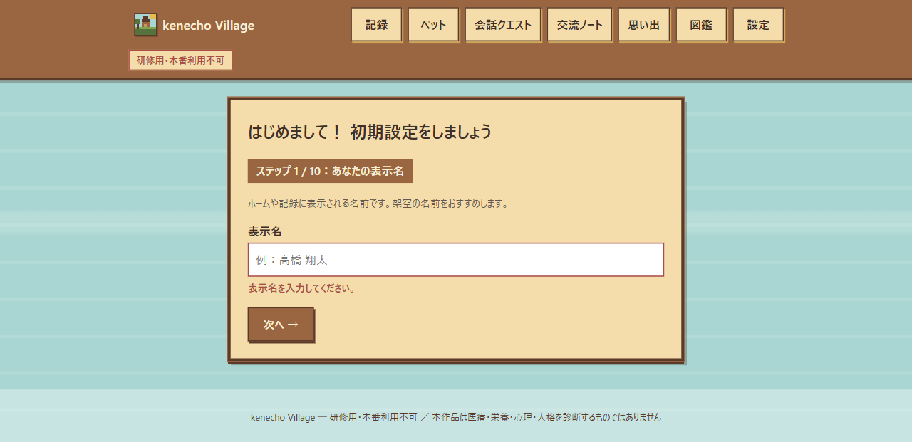
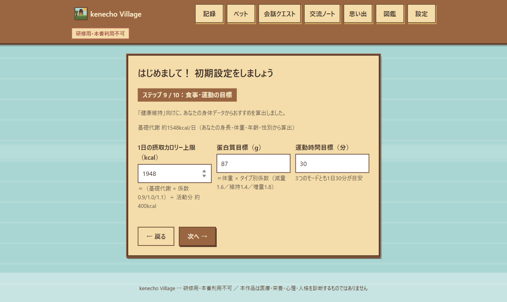
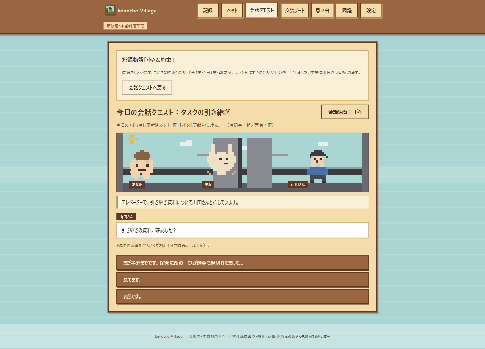
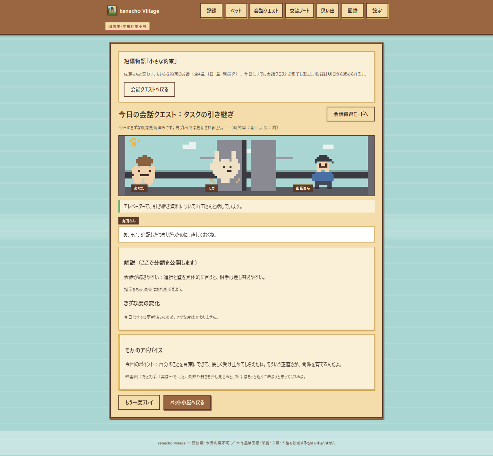
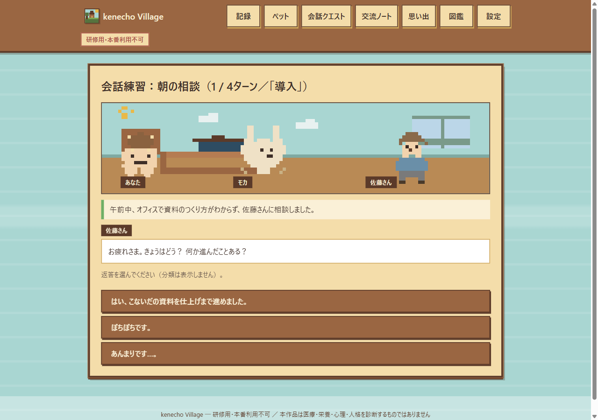
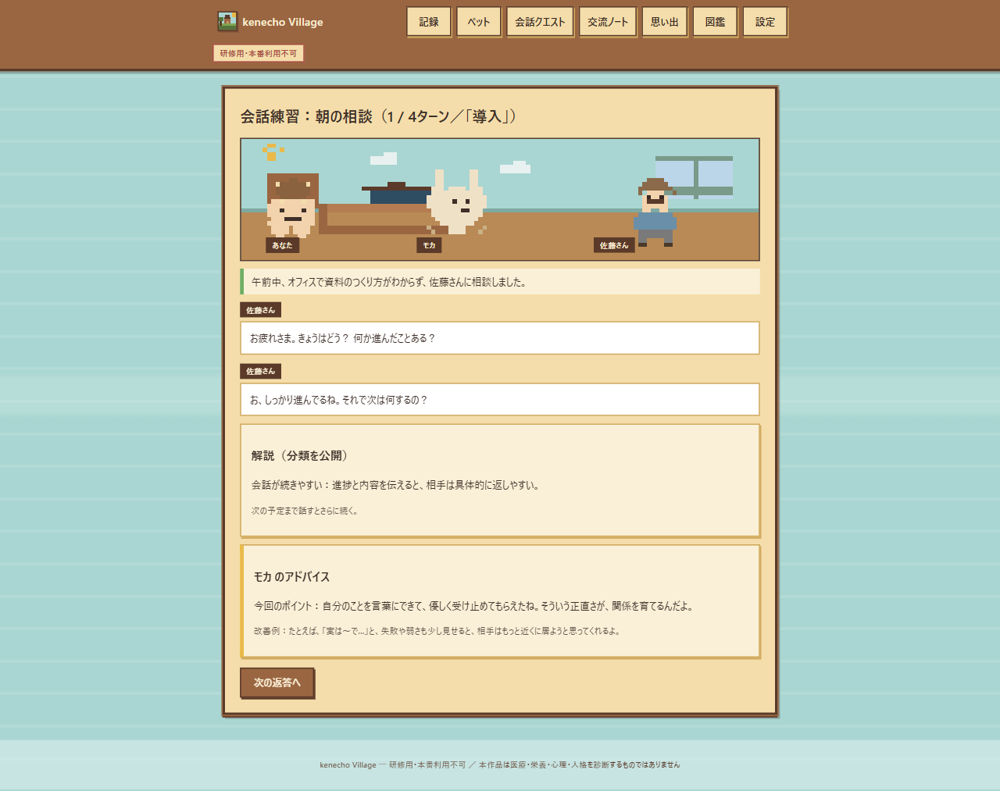
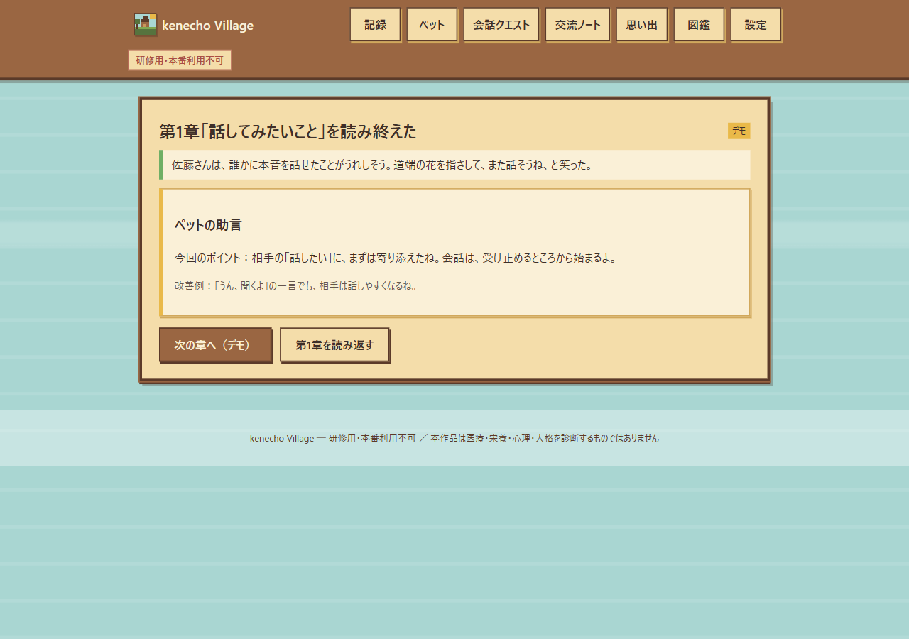

0このアプリについて
食事・運動・睡眠・体重の健康記録が、ペットの成長と村の住人との会話に変わる、ローカル動作のWebアプリです。
健康記録は健康EXPになり、ペットが育ちます。記録を終えたらペットを連れて外出し、村で出会った架空のNPCと会話クエスト（3択）を行うのが1日の本番です。この結果がきずな度やペットの経験値に反映されます。外出で出た題材を会話練習モードで何度でも反復できる、毎日の小さなループが設計の中心です。
本アプリは研修・学習用の教材です。医療・栄養・心理・人格を診断するものではなく、表示値は健康管理と会話練習の参考情報です。サーバーへデータを送信せず、すべての記録はお使いのブラウザ（localStorage）にのみ保存されます。
1はじめかた ― 起動と初期設定
インストール不要。HTMLファイルをダブルクリックするだけで起動します。
kenecho-village.html を Chrome または Edge（最新版）で開きます。サーバー起動は不要です。- 初回のみ「初期設定（10ステップ）」が始まります。表示名・年齢・性別・身長・体重を入力します（架空の値を推奨）。
- ペットの名前を決め、種類の決め方（自分で選ぶ／おまかせ）を選びます。
- 健康目標（減量／増量／健康維持）を選ぶと、身体データから食事・運動・睡眠の目標が自動算出されます。
初期設定 ― ステップ1/10

初期設定 ― ステップ9/10

2健康記録 ― 毎日の4つの記録
上部メニュー「記録」から、食事・運動・睡眠・体重を日付付きで記録します。
| 分類 | 入力内容 | ポイント |
|---|
| 食事 | プリセット食品50種から検索＋実摂取量（g）＋分類（朝昼夕間食） | カロリー・P/F/Cは基準分量から按分して自動計算。カスタム食品も登録可能 |
| 運動 | プリセット運動20種＋時間（分） | METs値から消費カロリーを自動計算（直接入力も可） |
| 睡眠 | 入眠時刻・起床時刻 | 起床日基準で記録。睡眠時間を自動表示 |
| 体重 | 体重（kg） | 1日1件。直近30日のトレンドグラフ付き |
▲ 食品は検索または「一覧」から選択。「ごはん（茶碗1杯）150g」を追加すると栄養値が自動集計されます。
評価タブで1日を確定する
4つの記録が終わったら「評価」タブで日次評価を確定します。食事・運動・睡眠が各0〜2点の計0〜6点で採点され、点数に応じた健康EXPを1日1回受け取れます。
▲ 目標と実績が並べて表示され、合計5点 → EXP +85 として確定できました。
3ペット育成 ― 卵から旅立ちへ
健康EXPがたまるとペットが育ちます。種類は6種、成長段階は卵→幼体→成長体→成体→伴侶→旅立ちです。
ペット小屋の「外へ出る」で村に出ると、初回は卵がかかります。孵化の瞬間に種類が決まり、図鑑に登録されます。うさぎ／きつね／こぐま／ねこ／ことり／たぬきの6種で、それぞれコーチの性格（優しい型・冷静型など）が異なります。
▲ 卵がぴくぴく動いています…。種類はここで初めて決まります。
▲ 今回は「うさぎ（優しい型）」でした。最初のNPC・佐藤さんとも出会えます。
▲ ペットはCanvasに描かれるピクセルアートで、健康状態が「ご機嫌」など表情つきで表示されます。記録がない日は「少し寂しそう」に。累計EXP・きずな度・記録日数もここで見えます。
4外出と会話クエスト ― 1日の本番
ペットを連れて村へ外出し、出会ったNPCと会話クエストを行う ― ここが毎日の本番です。結果はきずな度とペットの経験値に反映されます。
ペット小屋の「外へ出る」を押すと、その日の時間帯・天気に合わせた場面で村を歩き、NPCに出会えます。時間帯（朝・昼・夕方・夜）で出会える相手や話せる物語が変わり、深夜帯は出会いのない時間に設計されています。出会えたらそのまま今日の会話クエストへ進みます。
外出 ― 出会いとクエスト

会話クエストは1日1回の1ターン対話です。返答は3択で、分類は答えるまで表示されません。回答後に出てくる解説では、good（会話が続きやすい）／short（短いが自然）／bad（会話が続きにくい）の分類と、ペットのアドバイスが表示されます。初回の回答だけがきずな度に反映され、NPCとの関係・ペットのきずな度が上がります。
▲ NPCのセリフに対して3択を選びます。
クエスト ― 結果と解説

5会話練習モード ― 外出の模擬問題集
外出で出会う場面の題材を選んで反復できる、練習専用モードです。きずな度やEXPは増減しません（何度でも練習できます）。
外出の本番は1日1回なので、その間に練習モードで会話の型を体に覚え込ませます。基本4ターン（導入→展開→応答→締め）を通しで会話し、最後まで良い返答を続けるとボーナスターンが登場します。毎ターン解説とペットのアドバイスが出るので、本番の外出前に答えの型を確認できます。
▲ 外出で出会う場面と同じ題材（職場・飲食・日常など）から選べます。「ランダムに始める」も可能。
練習 ― 4ターンの会話

練習 ― 解説とアドバイス

6短編物語「小さな約束」― 4章完結のミニストーリー
佐藤さんと交わす小さな約束を描く、全4章・1日1章の読み物型コンテンツです。
会話クエストの画面から進めます。各章は3択2ターン構成で、第2章以降の選択によって約束ルート（参加する／手伝う）が分かれ、結末AまたはBが変化します。完了した章は「読み返す」ことができ、物語を完結させると記念カードが「思い出」に残ります。
1日1章まで（会話クエストを先に完了した日は翌日から）。すぐ通しで試したいときは、設定 → 研修デモツール →「短編「小さな約束」をデモ体験」を使うと、保存・報酬に影響なく4章連続で体験できます。
▲ 物語はペット同行で進みます。会話シーンは背景＋人物が1枚のピクセルアートで描画されます。
物語デモ ― 章の読み終わり

7村の機能 ― 交流ノート・図鑑・思い出
NPCとの関係・ペットの発見記録・旅立ちの思い出を振り返れる画面です。
交流ノート
出会った8名の住人が顔とプロフィール付きで並びます。未遭遇の住人は「??？」のシルエットです。
▲ きずな度と関係段階（初対面→心が通い始めた→…→パートナー）が見えます。
▲ 「次の会話のヒント」も表示されます。会話の記憶は世代を越えて維持されます。
▲ 孵化して種類が判明したペットだけが登録されます。
▲ 「生まれた！」の記録や、物語完結の記念カードが残ります。
8設定 ― 目標変更と研修デモツール
プロフィール・健康目標の変更、研修用デモ操作、データ初期化をここで行います。
- 表示名の変更と、BMI・基礎代謝などの参考値の確認ができます。
- 健康目標（減量／増量／健康維持）はいつでも再設定できます。
- 研修デモツール：EXPの付与・孵化日変更・旅立ち強制など、講師が進行を飛ばして確認するための操作をまとめています（本番利用外）。
- データ初期化は全データを消去して初期状態に戻します（元に戻せません）。
▲ 研修デモツールには「短編「小さな約束」をデモ体験（4章連続・保存なし）」もあります。
9データと仕組み ― 安心して使うために
技術的な性質を知っておくと、研修での説明にも役立ちます。
| 項目 | 内容 |
|---|
| 動作環境 | PC版 Chrome / Edge の最新版。kenecho-village.html を file:// で直接開いて動作（サーバー不要） |
| データの保存先 | ブラウザの localStorage のみ。サーバーへの送信・外部API・CDN・外部画像・外部フォントは不使用 |
| データの隔離 | プロフィール単位で記録が分かれるため、同じPCで複数人での試用も想定 |
| 消す方法 | 設定 →「すべてのデータを初期化」。またはブラウザのサイトデータ削除 |
| ピクセル素材 | PNGファイルを持たず、配色マス配列の定義から実行時にCanvas描画（拡大は整数倍率） |
| アクセシビリティ | 本文16px以上・ボタン高さ48px以上・aria-live による会話結果通知・prefers-reduced-motion 対応 |
マニュアル内のキャプチャは、実機操作を Playwright で自動化して撮影したものです。人物・記録はすべて架空データです。